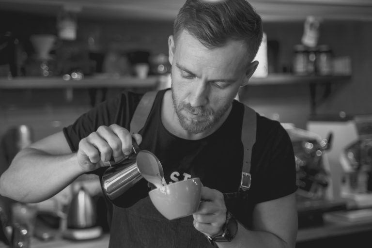

Once upon a time in 1996 we opened a small café and roastery. After many years of serving our fine coffees from around the world, we grew out of our small space and we realized we needed more room with which to bake, and cook and serve our many loyal and new customers.
After a few diversions, illusions and confusions, we acquired our larger space on the corner of Wilson Creek Plaza. Our café features all the coffees that we roast. We serve amazing fresh, made to order food, and delicious baked goods, made from scratch.